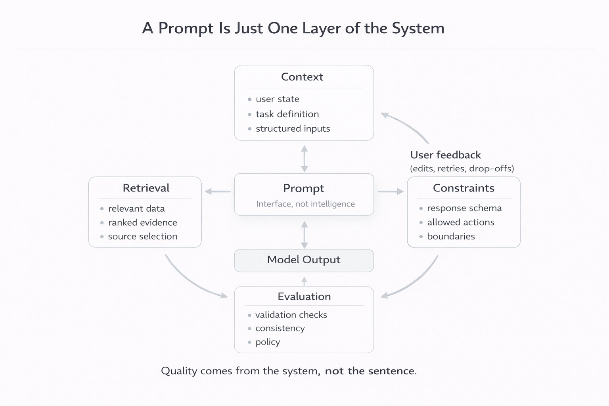

<!doctype html>
<html lang="en">
  <head>
    <meta charset="UTF-8" />
    <meta name="viewport" content="width=device-width, initial-scale=1" />
    <meta name="color-scheme" content="light" />
    <title>The Best Prompt Is a System, Not a Sentence | Journal</title>
    <meta
      name="description"
      content="A short essay on why strong AI output comes from system design around the model, not only from clever prompt wording."
    />

    <script>
      window.tailwind = window.tailwind || {};
      window.tailwind.config = {
        theme: {
          extend: {
            colors: {
              accent: "#BFD95A",
              accentMuted: "#7D9251",
            },
          },
        },
      };
    </script>
    <script src="https://cdn.tailwindcss.com"></script>

    <script src="https://unpkg.com/react@18/umd/react.production.min.js" crossorigin></script>
    <script src="https://unpkg.com/react-dom@18/umd/react-dom.production.min.js" crossorigin></script>
    <script src="https://unpkg.com/@babel/standalone/babel.min.js"></script>

    <style>
      body {
        font-family: ui-sans-serif, system-ui, -apple-system, Segoe UI, Roboto, Arial, sans-serif;
        background: #F4F4F1;
        color: #111111;
      }
    </style>
  </head>

  <body>
    <div id="root"></div>

    <script type="text/babel">
      const { createRoot } = ReactDOM;

      function PullQuote({ children }) {
        return (
          <blockquote className="my-12 border-l border-l-accentMuted/70 pl-4 pr-2 font-serif italic text-[1.18rem] leading-relaxed text-zinc-900">
            {children}
          </blockquote>
        );
      }

      function SystemsCallout({ children }) {
        return (
          <div className="my-12">
            <div className="mb-3 text-[0.72rem] font-semibold uppercase tracking-[0.18em] text-zinc-500">
              Product reality
            </div>
            <blockquote className="border-l border-l-accentMuted/70 pl-4 pr-2 font-serif italic text-[1.18rem] leading-relaxed text-zinc-900">
              {children}
            </blockquote>
          </div>
        );
      }

      function PlaceholderVisual() {
        return (
          <div className="my-12 overflow-hidden rounded-xl border border-zinc-200/80 bg-white/85">
            
          </div>
        );
      }

      function NewsletterArticle() {
        var _a = React.useState(0), progress = _a[0], setProgress = _a[1];

        React.useEffect(function () {
          function update() {
            var el = document.documentElement;
            var scrollTop = window.pageYOffset || el.scrollTop || 0;
            var scrollHeight = el.scrollHeight - el.clientHeight;
            var p = scrollHeight > 0 ? scrollTop / scrollHeight : 0;
            setProgress(Math.min(1, Math.max(0, p)));
          }
          update();
          window.addEventListener("scroll", update, { passive: true });
          return function () {
            window.removeEventListener("scroll", update);
          };
        }, []);

        return (
          <div className="min-h-screen">
            <div className="sticky top-0 z-30 h-[3px] w-full bg-transparent">
              <div
                className="h-full bg-accent/90"
                style={{ width: Math.max(progress * 100, 2) + "%" }}
              />
            </div>

            <div className="mx-auto max-w-2xl px-4 sm:px-6 lg:px-8 py-10">
              <div className="flex items-center justify-start">
                <a
                  href="writing.html"
                  className="text-sm text-zinc-600 hover:text-zinc-900 transition-colors"
                >
                  ← Back to Journal
                </a>
              </div>

              <h1 className="mt-6 font-serif text-4xl sm:text-5xl leading-tight tracking-tight text-zinc-900">
                The Best Prompt Is a System, Not a Sentence
              </h1>

              <div className="mt-4 flex flex-wrap items-center gap-2 text-sm text-zinc-600">
                <span className="rounded-full border border-zinc-200 bg-white px-3 py-1">AI Systems</span>
                <span aria-hidden="true" className="text-zinc-400">·</span>
                <span className="font-medium text-zinc-700">Mar 26, 2026</span>
                <span aria-hidden="true" className="text-zinc-400">·</span>
                <span className="font-medium text-zinc-700">2 min read</span>
              </div>

              <article className="mt-10">
                <h2 className="text-sm font-semibold uppercase tracking-wide text-zinc-500">
                  What I Expected
                </h2>
                <p className="text-zinc-800 leading-relaxed">
                  I went in thinking prompt quality would drive most of the output quality.
                  If the sentence was right, the result should follow.
                </p>

                <p className="mt-6 text-zinc-800 leading-relaxed">
                  That belief worked in quick demos.
                  It did not hold up once I started building real workflows.
                </p>

                <h2 className="mt-10 text-sm font-semibold uppercase tracking-wide text-zinc-500">
                  Where It Broke
                </h2>
                <p className="mt-6 text-zinc-800 leading-relaxed">
                  What I noticed was inconsistency.
                  A prompt that looked “good” could still produce weak results depending on what the model actually saw.
                  The variance came from the system around the prompt, not the prompt itself.
                </p>

                <SystemsCallout>
                  What changed for me was treating the prompt as one layer, not the lever.
                </SystemsCallout>

                <p className="text-zinc-800 leading-relaxed">
                  The first break was inputs.
                  When the model did not get the right state, user intent, or task framing, it guessed.
                  The output looked confident but was not usable.
                </p>

                <p className="mt-6 text-zinc-800 leading-relaxed">
                  Retrieval was the next lever.
                  When I fed partial or stale evidence, the model answered from weak ground.
                  Improving what came in mattered more than rewriting what I asked.
                </p>

                <p className="mt-6 text-zinc-800 leading-relaxed">
                  Constraints and structure had the biggest practical impact.
                  Clear output formats, bounded choices, and explicit fallbacks reduced variance fast.
                  It became easier to review, edit, and trust.
                </p>

                <PlaceholderVisual />

                <p className="text-zinc-800 leading-relaxed">
                  Validation closed the loop.
                  Even simple checks for format and consistency stopped bad outputs from reaching users.
                  That protected trust more than any prompt tweak.
                </p>

                <p className="mt-6 text-zinc-800 leading-relaxed">
                  Feedback loops made the failures obvious.
                  I watched where people edited, regenerated, and dropped off.
                  Those signals were more actionable than any prompt rewrite.
                </p>

                <h2 className="mt-10 text-sm font-semibold uppercase tracking-wide text-zinc-500">
                  What Actually Moved The Needle
                </h2>
                <p className="mt-6 text-zinc-800 leading-relaxed">
                  As the system improved, prompts got shorter and more stable.
                  Once the right context and evidence were in place, the model needed less coaching.
                  Iteration got faster because I was changing inputs, not words.
                </p>

                <p className="mt-6 text-zinc-800 leading-relaxed">
                  The pattern stayed the same across features.
                  Better inputs, clearer constraints, and stronger validation made outputs more predictable.
                  Prompt changes alone never produced the same stability.
                </p>

                <p className="mt-6 text-zinc-800 leading-relaxed">
                  This is the system thinking I keep leaning on now.
                  Inputs, retrieval, constraints, validation, and feedback loops are the real levers.
                  The prompt is the interface into those layers, not the strategy itself.
                </p>

                <p className="mt-6 text-zinc-800 leading-relaxed">
                  When something broke, I stopped asking how to phrase it better.
                  I asked whether the model had the right context, whether retrieval was relevant, and whether the output was constrained and validated.
                </p>

                <PullQuote>
                  A prompt is not the plan.
                  It is the front door to the system behind it.
                </PullQuote>

                <p className="text-zinc-800 leading-relaxed">
                  That reframing helped me build faster.
                  The more I invested in the surrounding system, the less I depended on clever wording.
                  Reliability started to feel like engineering, not luck.
                </p>

                <p className="mt-6 text-zinc-800 leading-relaxed">
                  If I had to compress the lesson, it would be this.
                  The best prompt I have is the one that sits on top of a strong system.
                  When the system is weak, the prompt cannot rescue it.
                </p>
              </article>
            </div>
          </div>
        );
      }

      createRoot(document.getElementById("root")).render(<NewsletterArticle />);
    </script>
  </body>
</html>
